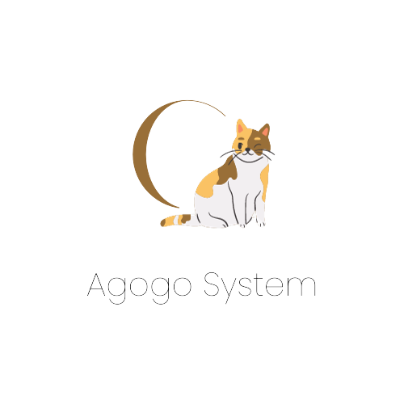

Agogo System
 Agogo System is an application developed for pet owners that will help you manage and store all the information about your pets.
- Vaccination records
- Microchip identification information
- Medication reminders
- Veterinarian contact information
- Emergency contacts
- Food administration information
Why Agogo System? Because it enables you to monitor essential information to ensure the well-being of your pet.
| 🐈 Free | ⭐ Premium |
|---|---|
With the FREE version, you'll gain access to...
|
Everything included in the FREE version, plus...
|